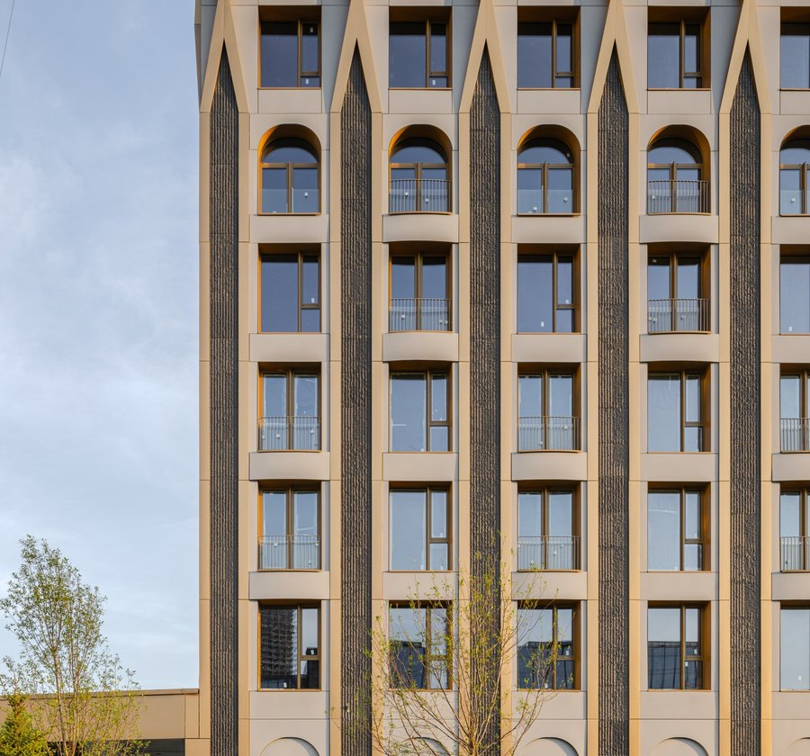

2026

16
Проект премиум-класса
Эра
ЮАО, Даниловский район, Дербеневская улица, 20 · era.center
Шесть разновысотных башен с каскадным завершением.
Ступенчатый силуэт узнаётся издалека и отсылает к небоскрёбам Манхэттена
Архитектура вдохновлена наследием ар-деко: натуральный камень и латунь в облицовке фасадов, растительные орнаменты и геометрические паттерны, французские балконы и арочные окна.
Во дворе — английский парк, в башнях — представительные лобби. Из окон и с террас открываются виды на центр Москвы и Москву-реку.
Квартал стоит на границе с ЦАО: 7 минут пешком до Дербеневской набережной, 20 минут — до метро «Павелецкая». На машине — 4 минуты до Садового кольца
и 5 минут до ТТК.
Самая продаваемая новостройка премиум-класса Москвы в январе–апреле 2026 года
6
башен
2
очереди
184 805
м²
I очередь введена в апреле 2026 года,
ввод II очереди — II квартал 2029 года